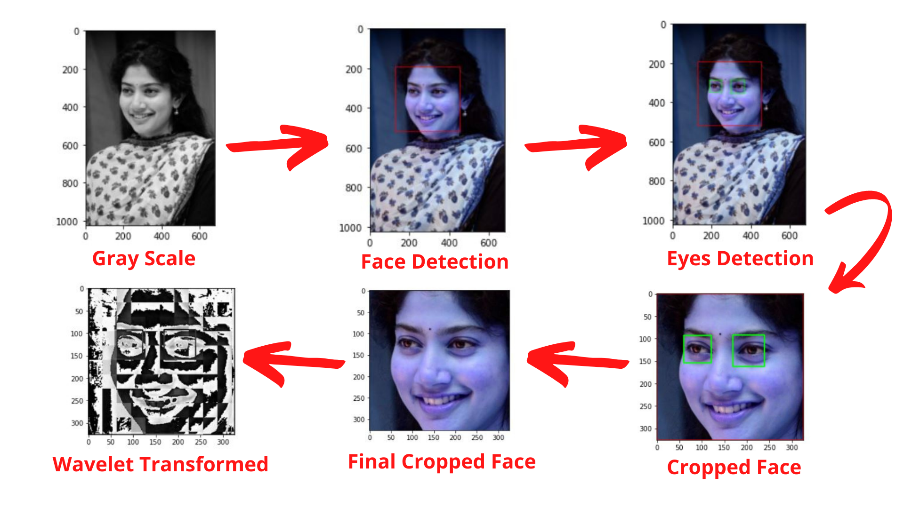
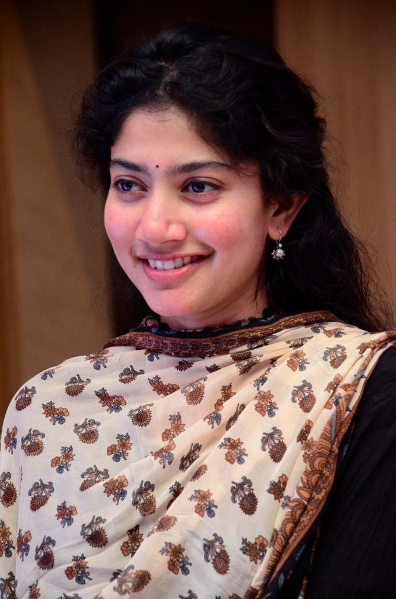
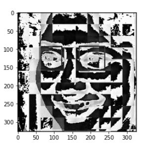
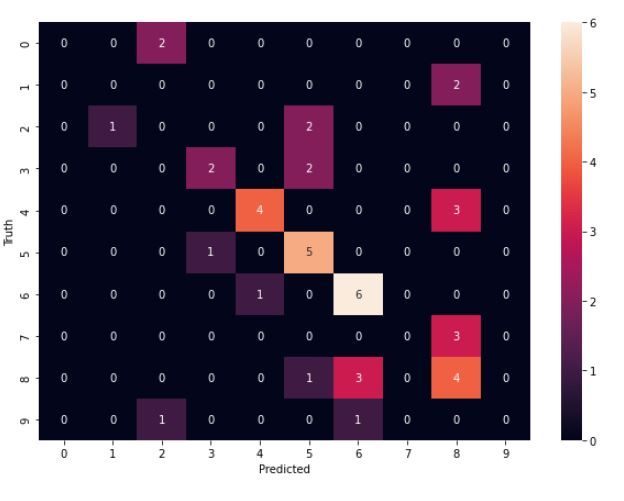
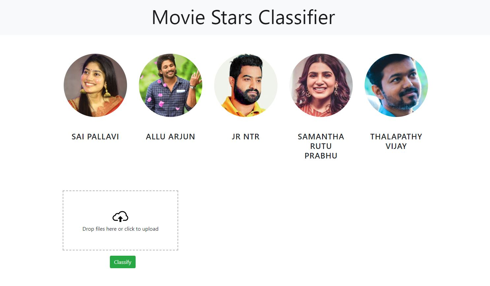

Github Link
Movie Stars Classifier
This project was mostly a learning process for me. I wanted to learn about classification in machine learning, so this project was very interesting and a great learning curve for me.
In this project i took some of the test data (pictures) of my favorite movie stars from South Indian Film Industry and i used OpenCV and Haar-Cascade detection technique to detect different facial features.
The Steps Involved:
- 1. Data collection:
-More than 100 pictures of the movie stars were scrapped from google and stored as test data. - 2. Data Cleaning:
-After data collection, data cleaning was performed. The scrapped images contained various impurities. Those impurities were cleaned in this process mostly using face detection technique. After detecting faces, to make sure the images are clear and the person is visible we detected both the eyes, if both eyes are visible, images were kept otherwise discarded. For face detection, I used OpenCV and Haar-cascade detection technique.
Some of the techniques used:
-For image with single person, if face and two eyes are visible which is detected using OpenCV we keep the image else we discard it.
-For image with multiple person, if faces and eyes are clearly visible we performed manual verification.
-For image in which face and two eyes are not visible it is discarded.
- 3. Feature Engineering:
-Wavelet Transform technique was used to extract facial features such as eyes, nose, lips, etc. - 4. Making the prediction:
-Finally we can make the prediction by using SVM classifier which compares the wavelet transformed face with the faces from test images then finally gives us the name of predicted person as a result.
Project Result:
Although the project is far from perfect, it was a great learning experience for me and it definetly gave me a great push towards my interest in field of machine learning.
Image processing
Original test image

Wavelete image

Prediction plot

UI
